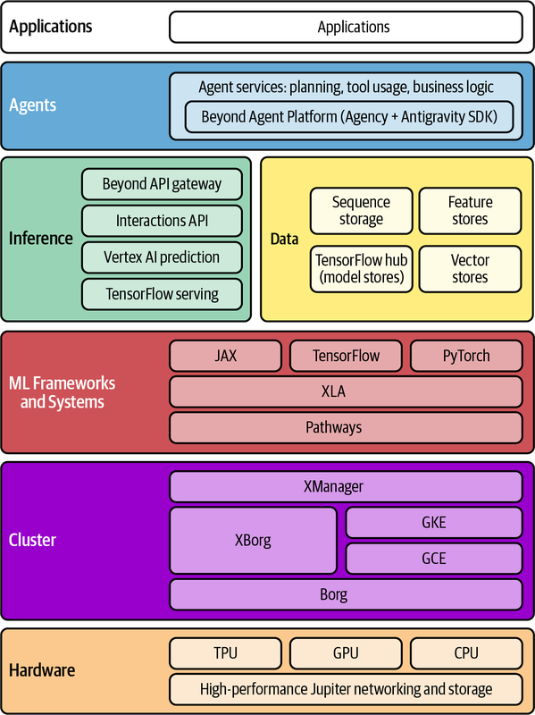
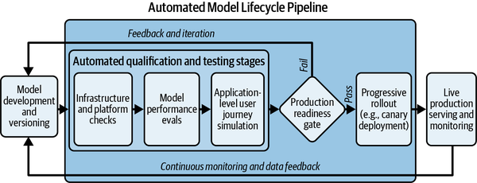
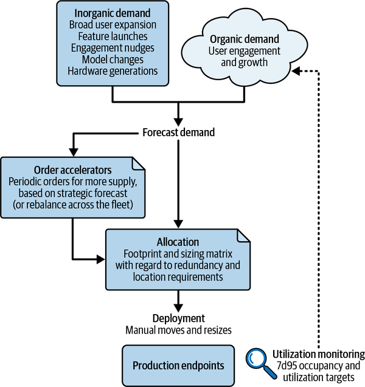
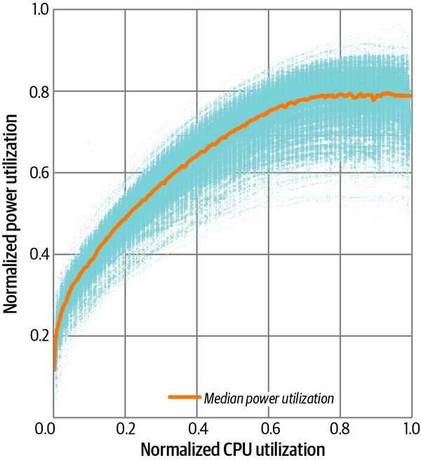
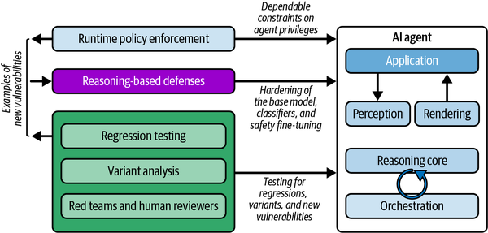

This chapter is one of two in this book that discuss the intersection of AI and Site Reliability Engineering. Here, we focus on the application of the various aspects of the SRE discipline to the operation of AI services. Chapter 21 concentrates on the application of AI to the SRE discipline.
Artificial intelligence is the overarching field dedicated to creating machines capable of human-like reasoning and problem solving, encompassing everything from simple expert systems to autonomous agents that use large language models (LLMs) as reasoning engines. While machine learning (ML) is a specific subset of AI that allows systems to learn from data patterns without explicit programming—powering tasks such as image recognition and fraud detection—the two fields often overlap. This is most evident in technologies like LLMs, which use deep learning (an ML technique) to achieve the sophisticated AI capability of understanding and generating human-like language, effectively blurring the lines between data-driven learning and broader intelligent behavior.
The wide proliferation of artificial intelligence and machine learning applications has not left the discipline of SRE untouched. In fact, the first Google SRE team supporting ML applications was founded in 2009 to support the Smart Ad Selection System,1 which had been created five years earlier to supply the Google Search ads auction with fresh predicted click-through rate data by training on log data. Since the formation of that first SRE team, the number of applications, use cases, systems developed, and SRE teams founded in support of AI and ML systems has expanded rapidly.
Today, Google SRE supports both AI and underlying ML systems of all sorts, with differing engagement models. Some infrastructure teams specialize in distinct areas, including a significant focus on the LLM serving and agent stack, experiment infrastructure, and storage. Other teams are more consumer-focused in nature, while still others are more enterprise-focused.
Teams that are focused primarily on supporting researcher workflows have adopted a hybrid SRE engagement model, aligning with the enterprise segment’s focus on long-term partnerships while embracing a consumer-style “mitigate first, communicate second” viewpoint to maintain the high velocity the business requires.
Let’s start with a few definitions, before we dive into the architecture and operational mechanics of delivering AI. This will ensure you have a clear reference point as we explore the stack. The following core ML-specific concepts are discussed in this chapter:
The computationally intensive process of feeding vast amounts of prepared data into an algorithm. During this phase, the system learns patterns and adjusts its internal parameters (weights and biases) until it can accurately execute its intended task. To prevent a model from degrading over time, this process is frequently transformed into an automated, recurring production pipeline, often referred to as continuous training (CT).
The phase in which a trained model is deployed to an environment where it can receive new, unseen input data and produce a prediction, classification, or generated response.
The measure of a model’s effectiveness and reliability in performing its intended task. This encompasses its predictive accuracy, precision, and recall, as well as its adherence to fairness and safety constraints.
A paradigm where a system continuously updates its model using a stream of live data, allowing it to adapt to changing patterns in near real time. This is in contrast to models that are trained offline on a static dataset and then served, such as many LLMs.
In generative AI, a token is the fundamental unit of data processed by the model. While often representing text (such as a word or subword), tokens can also represent discrete elements of images, audio, or video in multimodal models. The context window is the maximum number of tokens a model can process in a single request. This window is a composite: it typically contains the system prompt (the preamble and configuration that dictate the model’s behavior), the user’s current input, and the accumulated history of previous inputs and generated outputs from the ongoing session.
AI systems, like traditional systems, are structured in layers. An example reference architecture starts with specialized hardware, like GPUs or other accelerators such as TPUs and Trainiums, and is supported by high-performance networking and storage. Above this, a cluster management layer (e.g., Kubernetes or other proprietary cluster and job management systems) orchestrates these resources, handling complex scheduling needs such as topology awareness and gang scheduling—critical elements for large-scale training and inference.2 The ML frameworks and systems layer manages the distributed math operations, ensuring that, regardless of the framework chosen (e.g., PyTorch plus custom kernels), compilation produces the correct architecture-specific code and job layout for the learning task.3 As an example, with Google Cloud, either JAX4 or PyTorch can compile to Accelerated Linear Algebra (XLA) for deployment to Pathways.
Adopting a vertically integrated platform such as the one shown in Figure 20-1—whether developed internally or accessed through advanced cloud services—allows organizations to achieve a higher baseline of reliability and efficiency across their AI workloads. By using platforms that unify hardware, libraries, and compilers, teams can move away from bespoke, unscalable solutions and benefit from centralized services that implement sophisticated resource management for expensive accelerators. This platform-based approach offers off-the-shelf components for model training and serving, creating a “flywheel effect” where infrastructure improvements benefit all users and allow product teams to focus on core logic rather than underlying systems. Ultimately, choosing an integrated AI stack where reliability is embedded from the outset ensures the environment is observable, scalable, and resilient enough to meet high-velocity requirements.

Moving up the stack, the shared model inference layer, where a trained model makes a prediction given an input, provides a common set of primitives to enable serving models at scale. The data management systems layer handles lineage and policy enforcement for both the training data and the models themselves. While recommended, this layer is not always implemented as widely as it should be. Finally, the agents and applications layers consume the model outputs, ranging from direct API calls to sophisticated multistep agentic systems leveraging the agency framework for planning and tool use.
From an SRE perspective, reliable AI system architecture depends on these principles:
A clear separation of control and data planes
Robust resource management for coveted accelerators
Excellent observability
A seamless AI artifact management lifecycle (versioning, deployment, rollback)
Since inference (and even training) demands fluctuate so much, scalability and elasticity are critical. AI inference loads benefit enormously from solid autoscaling and load-balancing designs. To ensure reliability, performance, and quick diagnosing of issues, the stack must also meet traditional requirements such as data flow reliability and failure domain isolation.
With their position at the top of the hierarchy, application and agent systems lean more toward the AI side of the AI–ML continuum. The applications themselves look just like any other systems that SRE delivers, complete with frontends, user state, and standard business logic. The distinction is in their backends, which embed agents and model serving infrastructure to implement their intelligent features.
An AI agent is a software entity that uses a model’s reasoning capabilities to independently plan and execute tasks—such as calling an API or querying a database—to achieve a high-level goal. It’s common for an application to have specialized agents that interact with the model and other application backends to execute the intended outcome. For example, a self-driving car will have agents or agent-like components corresponding to the steering, acceleration, and braking systems to drive to the user-requested destination. Reusable agent platform components and capabilities exist and are necessary for the rapid development of applications that can use AI technology. At the time of writing, recent advances in AI include memory management, cross-agent communication, and sandboxing, and these areas continue to evolve.
Because agents contain specialized code tailored to products, Google has found it helpful to align with the existing SRE team to support a new AI application within their product scope rather than implementing a specialized team just for AI use cases in the application. This is also true for any application-specific agents that are needed, since the expertise required to keep them running is specific to the subject matter area.
A model serving stack that can intelligently route queries based on a set of constraints is required to make inferences and provide answers to calling applications and agents. For example, many model serving stacks serve multiple sizes and families of models with different configurations (e.g., context window sizes). This routing layer also acts as a lever for reliability. If a primary model experiences a capacity shortfall or latency spike, the infrastructure can seamlessly fall back to a smaller, less resource-intensive alternative, intentionally trading a slight degradation in response quality for continued system availability. Similarly, this routing capability facilitates live A/B testing, allowing SREs to cautiously shift traffic to new model weights without jeopardizing the user experience.
Managing this variety of routing constraints, along with the highly variable computational cost and latency of AI inference, requires a multilayered frontend infrastructure. This layer employs specialized distributed load-balancing techniques and frequently manages streaming connections,5 returning generated tokens in real time to maintain a responsive user experience. Because of the complexity of this environment, model serving infrastructure is usually managed by one or more specialized SRE teams. Despite the wide variety of applications, Google has found that a unified model serving system works for the vast majority of use cases, ranging from small fraud detection and click-through rate models to the largest LLMs.6
Delivering high-quality models for production serving involves several key stages.7 First, a foundation of high-quality input data needs to be established. Robust data processing pipelines ingest streams of raw data; clean up inaccuracies, duplicates, and outliers; and format the data for model consumption. This is essential for both online and batch learning systems. Because an ML model is fundamentally defined by its training set, data is compiled into the system’s core logic. Consequently, any pipeline failure that introduces anomalies, bias, or stale information may result in regressions that lead to degraded user experiences, confident but incorrect outputs, or cascading logic failures in downstream agent workflows.
Second, the model is trained using this prepared data. The training process can range from fully automated pipelines for online machine learning models that continuously incorporate new data to interactive, experimentation-driven model training by engineers. Finally, newly trained models must be rigorously evaluated. This validation assesses not only predictive quality and performance but also other critical attributes, such as fairness, safety, and resource efficiency.
Model training is much less standardized than model serving, in part because the structure of the tasks is much more complex and in part because researchers are constantly experimenting with different approaches. That said, different products tend to use different types of frameworks or infrastructure for model training. The trigger for deep SRE engagement typically occurs when a model transitions from a researcher’s experimental sandbox into an automated, recurring production pipeline—the continuous training mentioned earlier. Where there is a commonly used automated system for data ingestion or model training, as is the case at Google in Ads, SRE is able to defend the SLOs of the end-to-end system (see “Service Level Objectives in AI Systems”). In these mature pipelines, a failure to generate a fresh model within a specified time frame is treated as a production outage. However, for the initial research phases or manually driven model training, SRE usually takes a more limited advisory role, delivering on strategic efforts to make the work more efficient and cost-effective across a large number of products.
While the core mission of SRE remains unchanged, AI workloads introduce unique complexities compared to traditional software systems. The fast-paced nature of AI development, marked by constant iteration on models and infrastructure, demands a delicate balance between velocity and stability. Additionally, the nondeterministic nature of AI means that output quality itself becomes a primary measure of reliability.8 This section explores how SRE principles are adapted to navigate these challenges across the entire ML lifecycle, from defining SLOs in probabilistic environments to managing the extreme capacity constraints of accelerator hardware.
SLOs are critical for managing the reliability of any system, and AI systems are no exception. However, the unique characteristics of AI workloads, such as their nondeterministic nature and multidimensional complexity, require a tailored layer-by-layer approach to consistently define and measure them.
To simplify this complexity, it is helpful to categorize AI SLOs into four primary pillars before applying them across the stack:
Availability extends beyond basic uptime. In ML, this includes the availability of specialized hardware, the reliability of the control plane orchestrating training jobs, and the active enforcement of security attestations.
Throughput is essential for long-running and resource-intensive workloads. The primary metric here is ML goodput, which measures the proportion of time allocated resources are effectively performing useful computation, accounting for disruptions and system overhead.
Latency is a traditional request/response metric that must be augmented by generation-specific metrics, such as task scheduling latency for offline workloads and time to first token (TTFT) for streaming generative models. Alternatively, for online training, where freshness matters, latency SLOs can focus on the staleness of the data.
Quality is the defining pillar for AI. Since models can return successfully generated but factually incorrect responses, SLIs must measure output correctness. This includes monitoring for prediction bias, validation against golden datasets, and the success rate of tool usage within agentic systems.
Training workloads are generally throughput-oriented and can endure episodes of unavailability. On the other hand, they require the underlying hardware, its runtime, and the workloads themselves to work in synergy to execute as efficiently as possible. A widely accepted concept to measure this effectiveness is ML goodput, which is consistently used to define SLOs at this layer.9 Likewise, the cluster management layer has SLOs centered on reliable job orchestration, as well as control plane availability and scheduling latency guarantees.
For online machine learning especially, where models ingest live data, input quality directly impacts model reliability. SLOs must be strictly enforced on upstream data producers, such as data ingestion pipelines, feature stores, or raw telemetry systems. If an upstream data source degrades, this failure state must propagate through the system’s control plane to pause downstream consumers, including model training jobs or inference servers, before the model is corrupted. To defend these data quality SLOs without overwhelming compute budgets, SREs use a tiered approach to automated evaluation comprising:
By analyzing data lineage, SREs map complex dependency trees. The system can automatically raise an alert and halt downstream ML processes if the freshness or volume of data in a critical upstream table drops below some threshold.
To detect prediction bias—a drift between the model’s predicted output distribution and observed reality—we use statistical checks that continuously monitor the shape of incoming data and output distributions. These provide a cheap, real-time tripwire for model degradation.
For nuanced quality analysis, systems employ AI mechanisms such as learning dynamic error thresholds from validation data or using secondary models to score outputs (model-as-a-judge).10 Because these methods are computationally expensive, they are typically applied periodically or on a sampled subset of traffic, complementing the real-time statistical monitoring.
Once a model clears these rigorous data and quality gates, it enters production serving. At this stage, the SLO paradigm shifts dramatically: we move from measuring the throughput and statistical correctness of training pipelines to evaluating the application’s immediate, real-time performance.
Model serving workloads, which often power real-time, user-facing applications, demand stringent SLOs focused on high availability and low latency. Unlike in training, even brief disruptions or delays can significantly degrade the user experience. At the hardware and cluster management layers, this translates into infrastructure-level SLOs focused on the health and responsiveness of the individual serving replicas (the backend model server tasks that make up the load-balanced pool), as well as low task scheduling latency. The most critical inference SLOs are defined at the inference platform level. A current example is Vertex AI Prediction, which serves models from a variety of frontier AI labs. These SLOs cover high prediction availability and low-latency targets. They typically measure platform overhead at various percentiles while also encompassing reliable, swift model deployment and scaling capabilities, as well as highly available control plane APIs for management.
The agentic and application layers, where the model outputs are consumed and combined with other business logic, also require SLOs that reflect the end-to-end user experience. Model serving–specific metrics such as time to first token (TTFT) are a crucial foundation to form SLOs around to ensure a fluid user interaction. On top of the usual availability and latency guarantees, ML-specific quality SLOs representing correctness, accuracy, and quality are required. Because AI agents frequently execute complex, multistep reasoning chains, a single hallucination early in the sequence can cascade and derail the entire workflow. To safeguard these workflows, SREs must track the success rate of tool usage within agentic systems—for instance, how reliably an agent formulates a valid search against a vector database, invokes an internal API to retrieve user state, or triggers a downstream mutation such as filing a ticket. Other critical quality indicators include the structural validity of response formats (e.g., ensuring a model returns parsable JSON) and the rate of workflow errors or divergences from the user’s intended task.
While these metrics are not typically referred to using these terms in the literature, model evaluation scores themselves form a kind of SLI. Evaluations are defined to pass or fail relative to a threshold. In SRE terms, that minimum threshold is the SLO. Forming a model quality SLO is thus drawing a line using automated evaluation tooling at a particular score. SRE can then “defend the SLO” by troubleshooting and fixing these quality events when they occur.
Finally, as AI systems are increasingly used in sensitive and regulated domains, SLOs must also be extended to cover security, privacy, and compliance guarantees. This encompasses the entire process flow from the throughput-oriented workloads of training up through the inference, agentic, and application layers. This is where evidence and attestation come into play. Evidencing is the process of disclosing the security and compliance posture to the customer, providing a transparent “declaration of state” that includes model lineage and measurements of the environment state. Attestation provides the cryptographic assurance that this evidence is actively enforced. By utilizing hardware roots of trust, attestation ensures that the model and software stack have not been tampered with since the evidence was generated. For some products, like Private AI Compute, attestation failures are equivalent to outages from an end user’s perspective.11 In these situations, it is crucial to define SLOs for the attestation systems themselves. Such SLOs cover the freshness of the evidence, the latency of the attestation process, and the availability of the attested serving environment. For example, a client might refuse to send data to a system that cannot provide a valid attestation, which makes attestation availability a key component of the overall service reliability.
AI reliability, in its simplest terms, refers to the ability of an AI system to consistently perform its intended task while maintaining acceptable levels of accuracy, consistency, and dependability. An AI system is considered reliable when it delivers expected outcomes regardless of the operating conditions. Despite all the novelty brought by AI, the traditional SRE discipline still applies, meaning core practices like SLOs, monitoring and alerting, capacity planning, release and change management, automation, and incident response are all still required.
That said, a significant difference with AI applications is that the
responses are evaluated along a spectrum ranging from outright server errors, through the
AI “choosing” to give up or return low-quality responses, to high-quality responses. While a server error should be a 500, we see
inconsistency in the error codes used for giving up on queries and
degraded queries (especially when there are many layers to the serving
stack). As a result, it’s possible to return responses that are
successful at the API layer but don’t satisfy users because they
don’t deliver the intended outcome.
To systematically measure these degraded responses, we must look beyond traditional HTTP status codes. This requires instrumenting the serving layer to log when a system intentionally degrades a response (e.g., by routing the request to a smaller, less capable model during a capacity shortfall) or when a request hits a safety filter. At the application layer, we capture proxy metrics for quality by tracking explicit user feedback (such as downvotes) and implicit behavioral signals (such as immediate prompt rewrites or session abandonment). Finally, by routing a sample of these technically successful responses through asynchronous automated evaluations (such as structural validation or model-as-a-judge scoring), we can convert subjective degradation into a measurable SLI.
One of the causes for these responses is related to probabilistic outputs or retraining cycles. The same input might generate different outputs, making traditional approaches relying upon exact outputs ineffective. This unpredictability makes it challenging to consistently measure performance and complicates reliability observability efforts. Instead, monitoring frameworks must accommodate acceptable ranges of outputs and focus on validating behavioral patterns.
As indicated earlier, another common cause of poor responses is degradation to compensate for a capacity shortfall. This raises the question of whether these conditions should be surfaced differently. Often, when capacity is constrained, free users and requests that exceed available capacity can be routed to alternative models, which may lead to lower-quality results. SRE’s definition of reliability and our SLO definitions take capacity-related degradations into account so that they are visible through the stack, enabling the creation of an end-to-end SLO. During the engagement process, SREs align with product engineering leadership on the reliability objective. Once they’re on the same page, that objective cascades down the stack to define SLOs for the underlying infrastructure services. As always, these SLOs must be achievable and iterative. While the initial values may not match the ultimate product objective, they converge over time.
Although generative AI product features typically serve requests at a much lower rate than traditional features, the high cost of each request means SREs must apply the same attention to reliability here as they would to high-request-rate systems. This has implications for monitoring rules and observability practices that include thresholding features to limit noise or have assumptions around the uniform distribution of query cost. Because query size, latency, and computational cost can vary significantly from one request to the next, these dimensions must be tracked closely to prevent resource contention. Without this granular observability, a sudden influx of complex, token-heavy queries can easily saturate a backend, causing severe latency spikes, timeouts, or degraded response quality for all users sharing the service. This extreme variance requires creative solutions for efficient provisioning and fair capacity sharing across the user base.
The current scarcity of accelerator resources forces a level of rigor in capacity planning that stands in sharp relief to traditional software products. For traditional systems, the combination of massive scale and sophisticated automation has made capacity planning a comparatively simpler, lower-friction process. In the AI context, however, expensive hardware means that standard reliability practices—such as N + 1 provisioning—must be scrutinized against their financial and opportunity costs. Simply put, accelerators are so costly compared to traditional compute infrastructure that most organizations simply cannot afford the same levels of spare capacity that they would for non-AI workloads. Furthermore, as these systems can serve degraded responses while remaining technically available, load testing must be evolved to include quality thresholds.
Those who’ve tinkered at home or taken part in an AI hackathon will attest that building a rough version of Gmail’s “Help me write” or Meet’s “Take notes for me” using an existing model is not that difficult. You can make a functional prototype in a few days. However, turning that prototype into a production-ready feature with sufficient quality, predictability, reliability, and scalability, especially at Google’s scale, is a very different matter.
A prototype or simple feature may use straightforward prompt engineering techniques on top of a large model to guide the generation to fit the target use case, but achieving production-grade quality requires more involved workflows that improve the model’s accuracy and performance. This is known as hill climbing, and it necessitates high-quality training data and multiple iteration cycles. The following SRE best practices are essential for derisking AI feature launches and ensuring their reliability:
Gradually roll out AI features, starting with small experiments. Use frameworks that support A/B testing to compare different model versions or configurations. This allows for careful monitoring of performance, quality, and resource impact before full-scale deployment.
Implement monitoring that covers both system health (latency, error rates, resource utilization) and AI-specific metrics. This includes tracking model output quality, drift in data or predictions, and the frequency of fallback responses or errors.
AI features, especially those using large models, can have significant computational costs. Thorough load testing and capacity planning are critical to ensure smooth operation and cost efficiency, particularly for specialized hardware like GPUs or TPUs.
Ensure that, if issues arise, there are well-tested procedures to quickly revert to a previous model version or to disable the feature. Model versioning and management systems are key enablers.
The launch is just the beginning. Establish pipelines for continuous evaluation and to feed user feedback and production data back into the hill-climbing process for ongoing improvement and adaptation.
By integrating these iterative development and evaluation cycles with robust SRE launch practices, teams can more reliably transition AI features from promising concepts to valuable and dependable production services.
Qualifying ML models for production introduces complexities beyond traditional software releases. While binary rollouts focus on code correctness and performance, ML models require additional scrutiny because of their intricate dependency on specific hardware, the often subtle nature of quality regressions, and their potential for wider impacts on system stability and user trust. These subtle regressions can be amplified by Hyrum’s law, whereby a specific and undocumented behavior becomes crucial to correctness. The hybrid nature of SRE engagements supporting AI researchers creates a unique vulnerability to Hyrum’s law: while consumer SREs can often ignore the long tail of undocumented dependencies via statistical averages, some AI researchers may rely on those very behaviors for experimental integrity. Until AI-specific CI/CD processes mature to capture these implicit guarantees, velocity will remain in a natural, high-stakes tension with system stability.
SREs play a crucial role in closing this gap by establishing robust qualification pipelines that ensure new models or versions are safe, reliable, efficient, and effective when deployed at scale. This involves a multifaceted approach, examining everything from hardware compatibility to the nuanced behavior of complex AI systems.
Because accelerator hardware evolves so rapidly, production environments frequently host multiple generations of hardware—or even entirely different accelerator platforms—that must operate simultaneously while sharing the same foundational software libraries. Collective SRE experience demonstrates that platform qualification for accelerators is a continuous process. This is necessary because of the rapid pace of change and low levels of CI/CD integration test coverage for dependencies at many levels in the stack. What worked well for a given ML model under a specific hardware accelerator may lead to latency and/or correctness regressions with a new generation of models or with a different PyTorch release, XLA compiler, or CUDA library. SRE drives this process with SLOs to ensure that hardware and the software platforms the hardware depends on (e.g., XLA) are reliable and ready for production workloads. This qualification process is deeply integrated into the product lifecycle and continues throughout the life of the architecture. SRE’s involvement begins early in the lifecycle of a new accelerator architecture, often late during the engineering validation and test (EVT) stage.
The tests used across all phases of the product lifecycle from EVT forward are the same. They break down roughly into three classes that focus on answering the following questions: Is the output performant (latency and throughput)? Does the output make sense (correctness)? How does the output compare along various metrics (relative quality of the output)? The tests themselves scale according to the differences in the scale of the system under test. That is, if only a single chip is being tested, microbenchmarks are preferred. If it’s a larger system, a complete integration test is used.
Validation naturally includes the shared platform that supports the models because of the deep vertical integration of the stack. This includes the frameworks like Pathways and compilers including XLA. SRE must ensure that these frameworks function correctly on the new hardware and that models compiled with TorchTPU or XLA produce both correct and performant results. This validation is critical for achieving hardware fungibility across different accelerator architectures, driving the core SRE goal of enabling seamless updates to maximize hardware utilization and efficiency.
As the new accelerator matures and enters the pilot stage, SRE takes a leading role in acceptance testing. These acceptance tests leverage common testing strategies but use real production models to establish if a new chip is able to function as deployed. As the lifecycle approaches general availability (GA), testing expands to cover product-specific needs.
Qualifying a new hardware architecture is not a one-time event. The software stack that runs on it is constantly changing, with frequent updates to kernels, drivers, and ML frameworks. Each of these changes carries the risk of introducing regressions. These regressions can come from all parts of the stack, from the kernel and device drivers, to the XLA compiler, to the binaries and models. To mitigate this, SRE drives a continuous hardware qualification process that leverages the common testing strategy.
The core of the common testing strategy is a comprehensive testing matrix that covers workload, architecture, and topology. The workloads tested are chosen to be representative of real user journeys across inference and training. The architectures correspond to the various accelerators available, as well as the CPU architecture. Finally, the topologies correspond to the available arrangements of chips. To manage the high cardinality of the problem, SRE uses statistics from production systems to identify the most broadly used architectures and topologies, and focuses testing on those.
This continuous testing provides the data needed to confidently gate new software releases such as a kernel update or a new driver before they are rolled out to production. This unified strategy helps to catch incompatibilities or potential resource issues early and prevents regressions from reaching production.
SLOs are meaningful only when they can be defended. The term SLO-eligible refers to the criteria that must be met for the SLO to be defended. For example, prerelease hardware is not yet supported due to being under development, whereas obsolete hardware is no longer supported due to age, lack of parts, or prioritization.
A new architecture is considered SLO-eligible only after it has proven its stability through this rigorous qualification process. As data from the continuous qualification tests becomes available, SREs and platform engineers work iteratively to resolve any discovered edge cases. An architecture is ready for an SLO when there is a stable stream of data from these tests, demonstrating that the architecture can consistently and reliably serve production traffic. This data-driven approach ensures that the SLOs are not just aspirational targets but are defensible and accurately reflect the user experience.
The concept of SLO eligibility introduces a healthy tension between velocity and reliability. As product lifecycle processes mature, new platforms become SLO-eligible faster and existing platforms can remain SLO-eligible for longer.
Google’s model inference platform gates all new model submissions using an automated validation process that performs a series of checks, as shown in Figure 20-2. These checks include verifying the model’s structure, ensuring all operations are compatible with the target serving binaries and hardware, and estimating baseline resource requirements. By catching incompatibilities or potential resource issues early, we can ensure smoother model rollouts, more predictable performance, and seamless transitions as new hardware generations are introduced. This pre-qualification gatekeeping is crucial for maintaining the stability and reliability of the ML serving infrastructure.

Model weight rollouts are the first change surface that comes to mind. Configuration changes may be nearly as important as the model weights themselves, providing parameters, preambles, and prompt templates that tailor the model to the feature it implements. All of these assets should be pushed progressively, by means of automation, while scanning for regressions using canary analysis techniques.
Beyond fundamental infrastructure compatibility, rigorous testing for both performance and quality regressions is essential before an ML model can be considered production-ready. Performance regression testing focuses on ensuring the model meets the service’s operational requirements. This involves subjecting the model to continuous benchmarking and load tests to measure key metrics such as serving latency, query throughput, and hardware accelerator resource utilization, including accelerator duty cycle (busy time) and high-bandwidth memory (HBM) utilization. SREs work to define and enforce performance standards, ensuring that new model versions or changes in the serving stack do not introduce regressions that could jeopardize SLOs or lead to inefficient resource utilization. Automated alerts and blocking criteria in the rollout process are often based on these performance metrics.
Equally critical is quality regression testing, which assesses the model’s effectiveness and reliability in performing its intended task. This goes beyond just raw performance to evaluate the actual output of the model. A suite of evaluations is typically employed, designed to measure the model’s efficacy against core use cases. These evaluations aim to detect any degradation or drift in prediction accuracy, precision, recall, and fairness. The process often involves running the candidate model against golden datasets and human-rated examples, or conducting A/B tests (live experiments) by performing statistical comparisons of its vectorized outputs to the current production model. Significant deviations in quality metrics can block a release, triggering further investigation into the model’s training data or underlying layers in the stack.
ML model qualification must be integrated across the entire model lifecycle (from development to deprecation) and all serving stack layers. This requires checks at the hardware, infrastructure, model serving inference, and application layers. Application-level evals are paramount because the true impact and correctness of a model can often only be assessed within the context of the product and business logic it influences. This involves simulating real user interactions and measuring the impact on the user journey trajectory and proximity to the expected result, not just raw model output quality.
Given the complexity and multifaceted nature of these evaluations, automation and standardization are key to achieving reliable and efficient model lifecycle management. SREs champion the adoption of platforms and tools that aim to orchestrate and automate the end-to-end process of deploying and managing models. This includes versioning, qualification, and integration with safe, progressive rollout strategies such as canary analysis. By standardizing the qualification checks and automating their execution as part of a CI/CD pipeline for models, teams can reduce manual toil, minimize human error, and ensure that all models meet production readiness standards before being exposed to users. This systematic approach enables continuous validation and allows for faster, more reliable updates.
Unfortunately, some organizations push back on the structure and requirements of formal lifecycle management for models, believing that process and infrastructure will slow experimentation, innovation, and launch velocity. While this can be true during the development and adoption phases of model lifecycle management tools, what we see in production is that these tools introduce effective controls that improve confidence in CI/CD and drive significant increases in research and launch velocity beyond what can be realized otherwise. Boundaries catch problems early and deliver actionable feedback to model developers immediately, rather than letting bugs sit latently in production.
The advent of complex, agentic workflows—where multiple ML models, tools, or knowledge sources interact in sequence or in parallel to achieve a higher-level goal—introduces significant new qualification challenges. Unlike single-model systems, the behavior of an agentic system is determined not only by the quality of its individual components but also by the dynamics of their interactions. Emergent behaviors, cascading failures, or unpredictable outcomes can arise from the interplay between models, making traditional model-centric qualification methods insufficient. Qualifying these systems requires a more holistic approach, focusing on the end-to-end reliability and effectiveness of the entire workflow.
SREs are adapting and developing new practices to address the qualification needs of these sophisticated systems. Unlike standard model quality evaluation—which typically measures the safety or accuracy of a single, isolated output against a static dataset—qualifying an agent requires evaluating dynamic execution loops. This often involves designing scenario-based tests in which the entire agentic workflow is evaluated against realistic use cases and potential edge cases. Instead of just measuring model accuracy, these tests assess the success rate, robustness, and safety of overall task completion: for example, measuring whether an agent can correctly formulate a multistep plan and successfully resolve the user’s request without taking unauthorized or destructive actions. Sophisticated evaluation frameworks are needed to capture the nuances of these interactions, potentially involving simulations, human-in-the-loop evaluations, or comparisons against baseline behaviors. Ensuring the predictability, controllability, and safe operation of agentic systems requires a shift toward qualifying the system’s behavior as a whole, a new frontier for production AI reliability.
AI accelerators are currently a highly sought-after and constrained compute resource. While traditional cluster management systems often make standard compute resources feel effectively unlimited, AI accelerators—such as GPUs and TPUs—operate under a different economic and physical reality. They are expensive, subject to supply chain volatility, and have rigorous power and cooling requirements.
Given these constraints, capacity planning for AI is significantly more critical than for traditional products. The scarcity of resources forces a reevaluation of standard SRE practices; for example, the traditional N + 1 capacity provisioning model may be cost-prohibitive in an AI context, leading to the introduction of products without strict availability guarantees. Furthermore, estimating demand is fraught with difficulty. Determining the TPU capacity required per query per second (QPS) is challenging for new features, particularly when a single user query may fan out to trigger multiple models or safety checks.
Delivery timelines for accelerators are uncertain, so their allocation to any particular use becomes a matter of business priority rather than a technical challenge. Running out means errors or unacceptable latency. There is also the complexity of keeping up with new hardware releases, which change the cost profile and lead to rebalancing against utilization goals.
While the ultimate goal is business efficiency, this is often difficult to quantify directly. Instead, we use accelerator utilization as a proxy metric. Roughly defined as the duty cycle, this metric can be aggregated across all accelerators a product uses. As an example, the target metric may be measured at the 95th percentile over a week (7d95 occupancy). However, relying solely on utilization can incentivize unproductive busy work. To counter this, we employ a loss analysis framework.
In our capacity model, we begin with a theoretical baseline of 100% utilization. We then characterize any deviation from this baseline as a loss. By categorizing these losses, we can identify which are unavoidable and which can be mitigated through engineering investment. We generally categorize these into six primary losses, described in the following sections.
Machine learning models cannot effectively be served at 100% utilization across all available hardware resources without incurring significant inference errors or latency spikes. The exact “safe” ceiling varies widely by model and configuration: real-time inference with strict latency SLOs might hit a queueing bottleneck at 50% utilization, whereas asynchronous batch processing can safely be pushed closer to 90%. This large variance is driven by a combination of operational trade-offs and physical limits: strict latency SLOs require smaller, less efficient batch sizes; autoregressive decoding in generative models is inherently bound by memory bandwidth rather than pure compute; and large models introduce unavoidable inter-chip communication and host-level I/O bottlenecks. The gap between this ceiling and 100% is the max utilization loss.
The recommended solution to minimize the max utilization loss is to frequently load-test key models with representative traffic. Implementing a redline canary—a subset of production instances pushed to failure—helps identify the true breaking point. Ideally, automate this within the CI/CD process to detect regressions in new model releases.
We typically provision model deployment based on forecasted demand. However, if a feature launch is delayed or user adoption ramps up slower than predicted, the result is “launch buffers” and overprovisioned capacity.
Recommended solutions include:
Use unlaunched or buffer capacity for valuable but interruptible work such as model training, evaluations, or batch processing.
Unlock unused capacity for use by other teams (mutual benefit) rather than hoarding it within a specific product silo.
Provision capacity in steps aligned with the actual launch ramp, rather than 100% up front.
To ensure reliability, SREs traditionally provision systems with N + 1 redundancy, allowing the largest isolated failure domain to go down while still serving full demand. For massive AI workloads, this idle redundancy is exceptionally expensive.
Recommended solutions include:
Using a greater N reduces the percentage overhead of the +1. However, it also increases the risk of losing more than one failure domain.
Limit the scope of the redundancy requirements to applicable workload criticality or user class.
In advanced model serving architectures such as disaggregated model serving, the prefill (prompt processing) and decode (token generation) phases are scaled independently. While this usually yields better performance than interleaved serving, improper balancing of these stages relative to the traffic mix leads to bottlenecks and stranded capacity.
The recommended solution is to continuously monitor production bottlenecks and adjust the ratio of prefill to decode servers. Verify these ratios via load testing with representative traffic mixes.
Even with sufficient aggregate capacity, deficient load balancing can lead to “hot spots” where some replicas are overwhelmed while others sit idle. This is particularly acute in AI inference, where request costs are highly nonuniform (varying significantly by prompt length and decoding steps). Additionally, generative AI serving relies heavily on key-value (KV) caches—memory structures that store conversational history or shared prompt prefixes to avoid recomputing tokens. This introduces a strict tension between routing for cache locality and routing for even compute distribution. Simple algorithms like Round Robin fail to account for this variance, forcing the fleet to overprovision to accommodate the hottest replicas.
Recommended solutions include:
Move away from Round Robin toward dynamic algorithms such as Least-Loaded or Peak Exponential Weighted Moving Average (EWMA) that account for current server load.
Implement load balancers that inspect request characteristics (e.g., input token count) to predict cost and distribute heavy queries more intelligently.
Use global load balancers to smooth out regional traffic imbalances, shifting load to underutilized regions when latency budgets allow.
Every LLM has a minimum serving footprint. A single large instance is generally more efficient than several fragmented smaller ones. However, large foundation models often have a massive minimum footprint (e.g., 100 chips per cluster). If two products (say, Gmail and Chat) deploy the same model separately but neither fully utilizes it, the leftover capacity in each deployment is wasted.
Recommended solutions include:
Limit the number of unique model variants deployed in production.
Encourage the use of system prompts to customize a single general model for multiple use cases, rather than deploying separate specialized models for every feature.
Explore sharing model deployments across different products to avoid fragmentation at the infrastructure level.
Managing a large fleet of diverse accelerators distributed across various teams and product areas can lead to significant inefficiencies, including stranded resources and an inability to shift capacity to where it’s most needed. Implementing a centralized fleet management strategy allows for the creation of large, shared pools of accelerator capacity. Pooling resources enhances statistical multiplexing effects, smoothing out peak demands from individual users and improving overall fleet utilization.
This shared model, often managed by a central function, enables more agile resource allocation, allowing capacity to be dynamically shifted to areas with the highest impact or most pressing needs. This approach breaks down silos and ensures that expensive hardware is not sitting idle in one part of the organization while another is starved of resources.
The AI hardware landscape is characterized by the rapid evolution of accelerator generations and diverse architectures. Tightly coupling ML workloads to specific hardware types and generations involves a trade-off between the time-consuming, largely manual work required to optimize for a given platform and the flexibility this approach grants in terms of capacity planning and scheduling.
Hardware fungibility aims to abstract away the specifics of the underlying accelerator, allowing workloads to run seamlessly across different types (TPU versus GPU) and generations. This decoupling is crucial for:
It reduces dependence on a single type of chip.
It enables opportunistic scheduling on the most cost-effective hardware available. Accelerator flexibility also improves your negotiating position and reduces costs overall.
This increases the pool of available resources for any given job.
This allows planning based on aggregate compute needs rather than specific hardware.
Achieving fungibility requires either software abstractions and compiler support, or a dedicated team to implement platform-specific, high-performance kernels for each target accelerator. Technologies like XLA play a vital role by compiling ML models to run efficiently across various hardware configurations. Platform-level initiatives to standardize datacenter infrastructure, power, and cooling also contribute to making hardware more interchangeable.
Manual capacity planning for LLMs can become untenable as the system scales up.
A possible approach is to instrument the inference engine to report cost per query. Capacity automation then projects organic demand (the natural, gradual growth of existing traffic), and adds in planned inorganic launches (step-function increases driven by new features, model upgrades, or onboarding large tenants). The automation then proposes a capacity deployment plan based on these inputs. To estimate the expected inorganic growth from new features, we track the capacity usage of servers running small-percentage experiments for a feature and extrapolate the cost to a full deployment. This automation (Figure 20-3) handles medium-term sizing (baseline capacity), while autoscaling manages short-term spikes.

Traditional schedulers designed for CPU-based workloads often lack the necessary primitives to efficiently manage ML accelerator resources, leading to poor bin packing and low utilization.12 ML workloads have unique characteristics that necessitate specialized scheduling features. Some of the most relevant are:
Many large-scale training jobs require a specific network topology between accelerator chips—for example, TPU slices connected via high-speed inter-chip interconnect (ICI) links. The scheduler must understand these topology constraints to place jobs on a set of machines that meet the necessary requirements.
For tightly coupled distributed training jobs, all tasks must be scheduled simultaneously.
The scheduler prioritizes jobs based on their progress and likelihood of completion, especially in environments with frequent preemptions and high workload contention.
The scheduler actively manages job placement to keep large groups of contiguous accelerators available for large-model training and inference.
Beyond general fleet and scheduling efficiencies, significant gains can be realized by optimizing how individual ML jobs are structured and run.
Bin packing multiple models from the same serving unit can dramatically improve accelerator utilization, particularly for inference workloads where individual models may not have enough traffic to fully saturate the hardware. This requires effective resource isolation between models,13 intelligent bin packing of models within a server based on their resource footprints (HBM, compute), and the dynamic loading and unloading of models.
ML accelerator fleets may run a mix of production-critical jobs and lower-priority workloads, for example running training and research jobs in the spare capacity left by occasional dips in serving demand. Effective preemption mechanisms are essential to ensure high-priority jobs can access resources when needed. For long-running training jobs, preemption must be paired with frequent and efficient checkpointing to minimize lost work. The ability to quickly save and restore state is crucial for maintaining high fleet productivity.
The energy demands of AI infrastructure represent a real challenge to our industry. This is not a peripheral concern for SRE; it sits at the intersection of capacity planning, infrastructure design, and the physical limits of the electrical grid itself. Addressing it requires us to rethink long-standing assumptions about how we provision, operate, and optimize our datacenters. This challenge also presents an opportunity: by leveraging the inherent flexibility of AI workloads, SREs should include demand response capabilities in capacity plans to make the entire grid safer.14 This section examines how the energy landscape has shifted, the techniques we use to manage power responsibly as a first-class resource constraint, and the safety mechanisms required to prevent failures when consumption outpaces capacity.
Datacenter power consumption patterns have changed drastically to accommodate the increasing focus on ML workloads. While energy was previously plentiful relative to other system bottlenecks, it has now become a bottleneck itself. The reason for this is twofold: on a per-machine level, each machine contains more chips, and each chip draws more power. A typical ML machine has upwards of 3× higher power consumption than a CPU-only machine.
ML machines have stringent colocation requirements. A classical CPU-only serving workload can make progress independently of the presence of other machines. The smallest unit of fungibility is one machine. An ML training workload, however, can only proceed when all of its required machines are present on the same network, or at least within very close proximity. Its smallest unit of fungibility is much larger, often on the order of thousands of machines. This typically means thousands of machines, all of which need to be located on the same electrical grid. Assuming a workload requires 1,000 machines, this means the minimally useful energy footprint is roughly 3,000 times higher (3× higher consumption × 1,000 machines) than that of a classical CPU workload. Datacenter designs grow larger to accommodate this increased energy need.
Usage patterns also differ. While serving CPU workloads usually follows a daily peak-and-trough pattern, ML training workload usage is more like a massive square wave, with power fluctuations in the 10s of megawatts and near-instantaneous ramp speeds.15 Sudden power consumption increases and decreases can have drastic impacts, such as reducing the lifespan of TPUs or GPUs due to constant thermal fluctuations and damaging rack and datacenter equipment. Outside the datacenter, the grid and utilities can be affected as well. Large energy consumers have long had interruptible power agreements in place with suppliers. Creating a demand response plan is thus a critical part of planning for large datacenters, the power grid, and energy generation in order to reduce costly infrastructure investment, alleviate transmission congestion, enhance operational reliability, and support decarbonization goals.16 To learn more about Google’s sustainability efforts in these and other areas, follow Google Sustainability.
With energy emerging as a bottleneck across hardware and software systems, traditional optimization strategies must evolve. The general principle is to oversubscribe energy capacity in relation to physical machines.
To better understand what this means in practice, let’s consider an analogy. Selling 105 tickets for a flight with only 100 seats is analogous to provisioning 105 machines when the available power capacity can only support 100. Passengers who do not show up due to unforeseen delays or last-minute emergencies are akin to underutilized machines, resulting in lower-than-expected power consumption.
Some passengers are more flexible about their departure time, and are fine with taking a later flight. These are analogous to batch jobs that are flexible about when they are scheduled.
What about failure cases? If all 105 passengers show up, 5 passengers will not have seats. They won’t be happy, and the airline will have to pay them compensation. However, this extra expense is offset by the additional ticket sales in normal operations, so the airline is willing to occasionally accept this outcome.
In datacenters, it’s possible for all machines to experience simultaneous utilization spikes. In this case, some workloads may have to be forcibly shed to avoid exceeding the power rating of the power domain. This may result in a reduction of workload availability (while not necessarily violating SLOs), analogous to the airline needing to compensate passengers who don’t have seats.
Continuous and accurate power monitoring, along with a latency-sensitive feedback loop for software-triggered power reduction, is required to act quickly and reduce power consumption before a circuit breaker trips.
Unavailability due to power capacity fits into the error budget for the workload SLO, along with other types of disruptions. But unlike with other sources of disruptions, correlated simultaneous failures across many workloads is common in power failures. Services sensitive to these types of failures should provision redundantly across power domains (e.g., racks, rows, bus ducts).
The relationship between power consumption and machine utilization is not linear. This has significant implications for how we obtain the most performance per unit of power (Figure 20-4).

The Y-intercept is machine idle power (power utilization at 0% machine utilization). A machine idling at 0% utilization still consumes a nontrivial amount of power. The power consumption curve flattens at higher machine utilization. For example, increasing machine utilization from 75% to 80% only marginally increases power consumption, while increasing utilization from 30% to 35% causes a much larger increase. This means machines should run at as high a utilization as possible to make power consumption more efficient, maximizing FLOPS per watt. However, machine utilization is capped for performance reasons. Multitenancy, common in CPU-only workloads but less common in ML training, frequently results in machine isolation failures (e.g., kernel lock contention, CPU access contention, memory bandwidth saturation) between workloads, which only become evident at higher machine utilization.
The main safety principle in optimization is to build a system capable of detecting when consumption is greater than capacity and quickly shedding power before a physical circuit breaker trip results in an unnecessarily long recovery time.
Power-related failures, whether due to excessive consumption (e.g., from oversubscription) or the failure of underlying infrastructure (e.g., a transformer going offline) are abrupt and ungraceful. Recovery from unclean machine shutdowns is lengthy and messy. Rebooting complex software systems with complex dependency chains also increases recovery time.
There are three main ways to curtail energy consumption through controlling software workloads: these should be combined to balance power reduction ability, reaction time, recovery time, and performance impact. Reaction time is particularly important, as a typical circuit breaker can withstand an excess of power or current for only a few seconds before it trips and the whole domain instantly loses power. The options are:
On ML machines, throttling accelerator compute (as opposed to host CPU or accelerator memory) is the most power-effective approach because it targets the most power-hungry part of the machine. This results in immediate power reduction (within milliseconds) and rapid power restoration once throttling ends. It allows granular power consumption reduction down to approximately machine idle power (power consumption at 0% machine utilization). However, the performance impact in relation to throttle depth is difficult to establish.
With this approach, you assign workloads a priority ordering and successively terminate tasks (via the SIGKILL signal) within each priority band, checking whether power consumption has decreased below a safe threshold. If not, you move on to the next priority band. The loop of task termination and power consumption checks takes on the order of seconds to take effect. When all workloads on a machine have been removed, power consumption is reduced to machine idle power.
Shutting down a machine is the only way to remove the remaining idle power consumption. Since the machines must be shut down within seconds, care must be taken to verify that the shutdown is clean and the machines can be booted up without issue.
The overall goals when managing energy consumption are to minimize performance loss per kW shed and to shed as little power as possible in order to reduce power consumption to safe levels.
Upon detection of a power event, the demand response plan kicks in. First, throttling is employed to quickly reduce power consumption, minimizing unnecessary workload shedding during transient events such as sags or swells. If the power event persists for more than five seconds, the task termination sequence or machine shutdown procedure is initiated. The choice between task termination and machine shutdown depends on whether the datacenter has been provisioned to support machine idle power during a power shortage.
Google has long championed the Secure AI Framework (SAIF) to encourage the right mindset regarding AI risks and ensure that systems are built and deployed responsibly. The integration of AI, and particularly LLMs and generative AI, into production systems introduces novel security challenges and amplifies existing ones. For SREs, understanding and mitigating these risks at scale using SAIF is crucial to building and operating reliable and secure AI services. This section explores the production threat landscape, platform capabilities for defense, and the evolving compliance requirements.
In traditional systems, code binaries are rarely the primary target of theft; user data is. In AI systems, the model itself—and the data used to train it—represents a massive capital investment and valuable intellectual property. ML assets can be a prime target for attackers, necessitating security controls to protect them throughout their lifecycle. This includes preventing direct model exfiltration and detecting unauthorized access.
AI systems also introduce architectural patterns and dependencies that significantly expand the attack surface. Unlike traditional APIs with strictly typed inputs, AI APIs are often open-ended and flexible, designed to accept natural language and other unstructured inputs. Crucially, the architecture of these systems creates a fundamental vulnerability by blending control logic with user data. In this environment, the system prompt—which serves as the foundational configuration and operating boundary for the model—is processed through the same channel as user input. This mixture of instructions and data makes it exceptionally difficult to prevent the model from treating a user’s malicious input as a legitimate override of its original system constraints. This flexibility makes these systems prone to prompt injection, where malicious inputs manipulate the model into overriding its system instructions or safety filters. Mitigating these types of risks requires a layer to check model inputs and outputs, such as Google Cloud Armor.17
Beyond the input layer, the composition of AI systems introduces other risks, including:
AI systems rely heavily on a complex supply chain of pretrained models, open source datasets, and third-party frameworks. SREs must treat these external dependencies with the same scrutiny as binary imports, as compromised weights and poisoned datasets can introduce backdoors that are difficult to detect through existing processes.
The shift toward agents that interact with external systems (via protocols like the Model Context Protocol) creates new trust boundaries. When agents interact with other agents (agent-to-agent), the complexity of these trust relationships multiplies. Production owners should consider the blast radius of an autonomous agent that has permission to invoke tools or modify state in other systems. Consider Figure 20-5, which illustrates our defense-in-depth approach for handling agentic and dynamic code execution risks.
Perhaps most critical for production stability is the trend of systems that generate and execute code on the fly to perform tasks like data analysis. This effectively introduces remote code execution as a feature rather than a bug. Without rigorous sandboxing and resource constraints, this capability presents a significant risk to the entire underlying infrastructure.

These technical challenges exist within an unstable regulatory environment. AI regulation is immature and volatile, meaning compliance requirements can change at a moment’s notice. This uncertainty forces us to adopt a forward-looking design mindset. We cannot bake every compliance assumption deeply into the architecture; instead, we must build flexible systems that allow us to adapt security postures without requiring a complete rearchitecture of the stack.
As the ultimate owners of production systems, we are uniquely positioned to operationalize security and compliance requirements. To do so, we must collaborate closely with other engineering functions to develop the relevant policies and threat models, then leverage our extensive background in production platforms, monitoring, and automation to implement the resulting controls at scale, with reliability and sustainability in mind.
The most effective way to achieve these goals is by driving convergence onto common AI infrastructure and platform services. Just as SRE champions common platforms to optimize for resource efficiency, this same centralization allows for the uniform application of security postures and compliance requirements. By embedding controls directly into the model serving platform, we can ensure that capabilities such as audit logging, access transparency, and other enforceable constraints are scalable across a large number of applications and use cases.
An example is Google’s Private AI Compute offering, which ensures inference payloads are inaccessible to insiders and infrastructure operators. This is achieved through the seamless platform support of trusted execution environments, which isolate the workload all the way down to the hardware layer. This cryptographic isolation guarantees that neither the sensitive user data nor the valuable model IP is visible in memory during processing, mitigating the risk of data exfiltration by insiders or compromised infrastructure.
However, mandating a centralized platform can introduce unaffordable friction and significantly reduce flexibility for individual teams engaged in fast-paced, frontier AI development. Balancing this trade-off is essential; locking down infrastructure too early can stifle the business velocity required to find product-market fit. It is therefore paramount to time the platformization of AI stack components carefully, accepting that during early exploratory stages, bespoke solutions might be the most practical path forward.
Traditional observability is insufficient for the unique security and compliance challenges posed by AI systems. AI systems, especially those involving LLMs and agents, often function opaquely, making it hard to understand their behavior and detect unwanted activity. Observability enhancements are necessary to demystify these systems and ensure they operate securely. This means instrumenting not just the infrastructure but also the AI-specific components and abstractions. We need detailed logging of prompts and responses (with appropriate redaction of sensitive data), the inputs and outputs of any tools or APIs called by agents, and even a trace of the agent’s internal “reasoning” or decision-making process where possible.
This specialized observability data is critical for several reasons. It enables the detection of potential prompt injection attempts by analyzing input patterns and unexpected deviations in AI behavior. It also allows for auditing the actions taken by autonomous agents, ensuring they align with expected permissions and user intent. This observability data may need to be consumed in real time for time-critical detection. In this case, fast mechanisms such as semantic drift checks using embeddings or heuristic and regex filters are preferred. For more comprehensive detection, we can take advantage of advanced techniques such as model-as-a-judge, where an advanced ML model is used to assess the AI workflow and determine whether it entails any risk, including but not limited to security.
In the event of a security incident, this rich data is invaluable for forensics, helping us understand how an attack occurred and how to prevent future occurrences. Without this deep level of insight, securing and trusting complex AI systems becomes a near-impossible task.
The advent of AI and ML has affected software engineering profoundly, and SRE is no exception. The role of SRE has expanded from managing deterministic software to engineering for probabilistic AI workloads at higher velocity and with greater resource constraints than ever before. But SREs have always been engaged in this balancing act: resolving the inherent tension between the business-critical demand for rapid feature deployment and the pillars of operational reliability and efficiency.
Even if conceptually the same, the shift to supporting AI has necessitated deep technical and operational adaptations across the SRE toolbelt. Reliability is no longer a binary measure; it now encompasses quality and nondeterministic outcomes informed by tailored SLOs and specialized latency metrics for serving.19 Robust qualification pipelines are now business-critical to safely deploy and manage the frequent updates of models and configurations, as well as to defend against losses from unmaterialized demand and fragmentation.
The practices discussed in this chapter represent the early days of SRE for AI. We recognize we are operating in a nascent and rapidly evolving domain, and as the underlying models and architectures continue their super-exponential progression, we expect our established practices to mature and new ones to emerge. We look forward to what comes next.
1 See Todd Underwood’s keynote address, “SRE for ML: The First 10 Years and the Next 10” at SREcon21.
2 We’ll discuss scheduling primitives in “Scheduling Primitives”.
3 Consider TorchTPU; see Claudio Basile et al., “TorchTPU: Running PyTorch Natively on TPUs at Google Scale”, Google for Developers blog, April 7, 2026.
4 Roy Frostig, Matthew James Johnson, and Chris Leary, “Compiling Machine Learning Programs via High-Level Tracing”, SysML Conference, 2018.
5 Wenxin Zhang et al., “Distributed Load Balancing with Workload-Dependent Service Rates”, in Proceedings of the 26th ACM Conference on Economics and Computation (2025).
6 Christopher Olston et al., “TensorFlow-Serving: Flexible, High-Performance ML Serving”, NIPS 2017 Workshop on ML Systems.
7 Distinct from production training, production serving is a technical term referring to models with a high expectation of responsiveness and serving interactive traffic.
8 For example, the identification of model quality (performance/correctness) as the most relevant SLI for ML was noted by Todd Underwood in his SREcon22 presentation, “SRE and ML: Why It Matters” Presentation at USENIX SREcon22 EMEA, Amsterdam, Netherlands, October 2022. https://oreil.ly/9Qr2U
9 Arissa Wongpanich et al., “Machine Learning Fleet Efficiency: Analyzing and Optimizing Large-Scale Google TPU Systems with ML Productivity Goodput”, preprint, arXiv, April 20, 2025.
10 For additional information, see D. Sculley et al., “Hidden Technical Debt in Machine Learning Systems”, in Proceedings of the 29th International Conference Neural Information Processing Systems (NIPS), 2015.
11 Google Platforms and Devices, Google DeepMind, and Google Cloud, “Google Private AI Compute: Extending On-Device Privacy with the Power of the Cloud” (2025).
12 Bin packing refers to the process of intelligently scheduling and placing multiple distinct workloads—such as individual ML models—onto a shared set of hardware resources (e.g., servers or accelerators) based on their specific compute and HBM footprints. The goal of bin packing is to maximize overall hardware utilization and minimize fragmented, wasted capacity.
13 While traditional isolation focuses on more standard resources (CPU, RAM, I/O, and network), AI serving environments introduce a more complex dimension of scarcity. Effective isolation must now account for HBM capacity and throughput, the PCIe/interconnect bandwidth used for constant weights and activations shuffling, and accelerator core duty cycles that operate independently of the host CPU. Failure to isolate these can lead to inter-model interference, where one model’s prefill phase starves another’s decode phase of memory bandwidth.
14 For more information around demand response capabilities, see Michael Terrell, “A New Milestone for Smart, Affordable Electricity Growth”, News from Google, March 19, 2026.
15 Houle Gan and Parthasarathy Ranganathan, “Balance of Power: A Full-Stack Approach to Power and Thermal Fluctuations in ML Infrastructure”, Figure 5, Google Cloud Blog, February 12, 2025.
16 Xin Chen et al., “Electricity Demand and Grid Impacts of AI Data Centers: Challenges and Prospects”, preprint, arXiv, July 2, 2026.
17 For a codelab to get started with this quickly, see Abirami Sukumaran’s “Building a Secure Agent System with Model Armor”.
18 Santiago Díaz, Christoph Kern, and Kara Olive, “Google’s Approach for Secure AI Agents: An Introduction” (2025).
19 For more about model quality assessment, consult D. Sculley et al., “Hidden Technical Debt in Machine Learning Systems”, in Proceedings of the 29th International Conference Neural Information Processing Systems (NIPS), 2015, as well as Eric Breck et al., “Data Validation for Machine Learning”, in Proceedings of the 2nd SysML Conference, 2019.